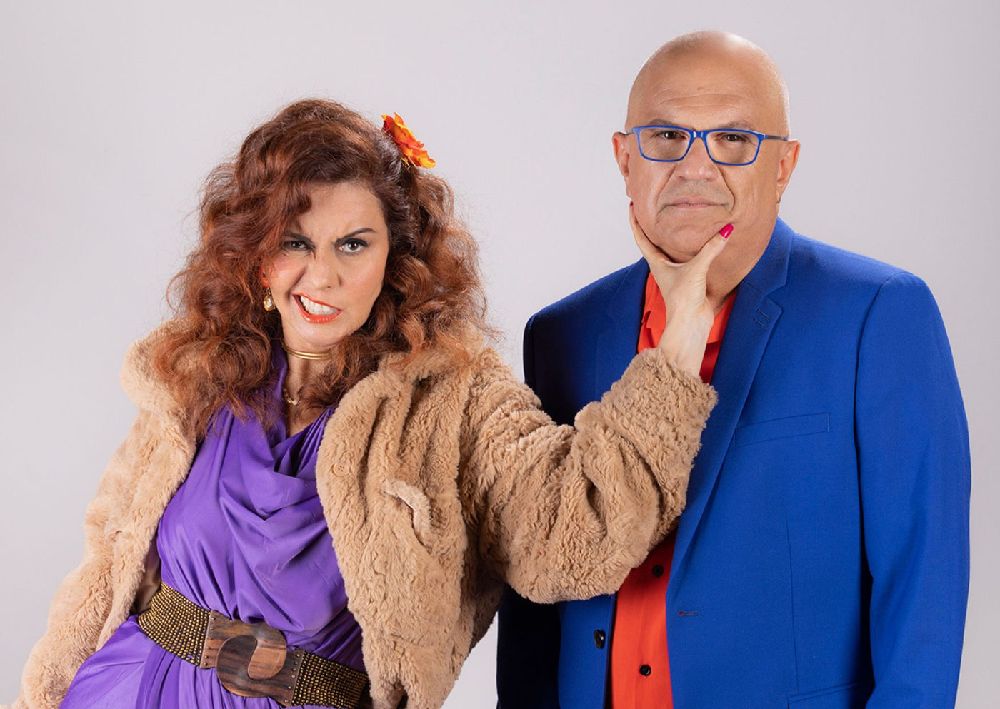

Foto — Aralume Fotografia
Teatro
Só mais duas sessões para assistir o espetáculo “Neura!” no Teatro Bibi Ferreira
Com texto de Rita Fischer e direção de Thiago Bomilcar Braga, o espetáculo “Neura!” chega a suas duas últimas apresentações no teatro Bibi Ferreira, este que vo…